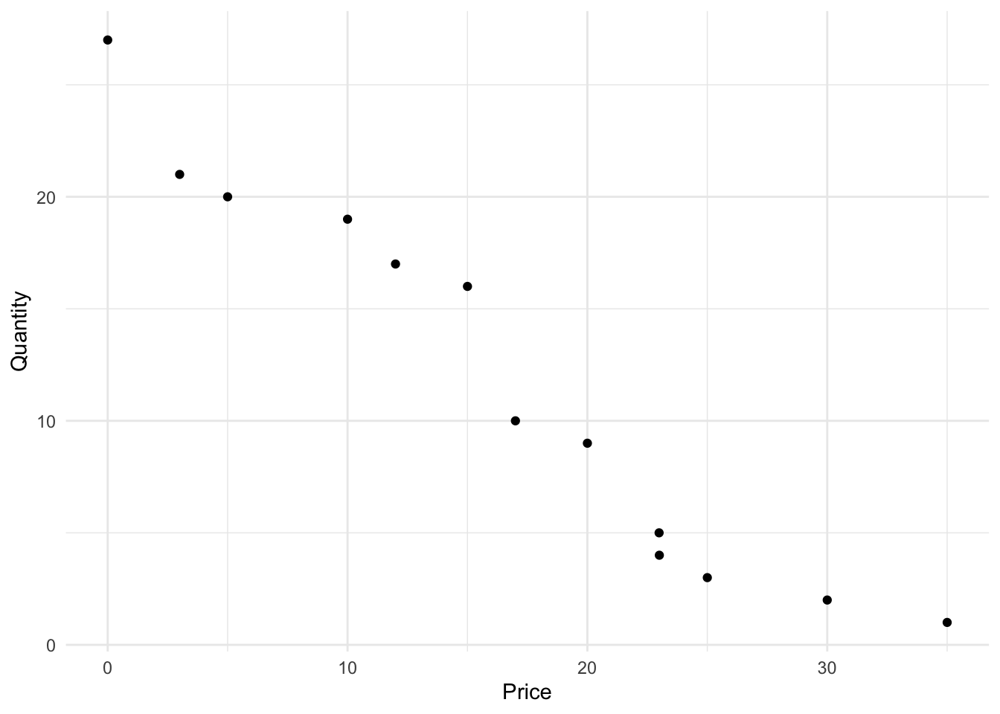

4 Customer Demand
4.1 Why Study Demand?
Successful innovations hinge on being desirable, feasible, and viable. These aspects are interdependent. If an innovation lacks desirability, feasibility alone can’t save it. If it’s not feasible, it can’t meet the desired level of performance. Without desirability and feasibility, viability is unattainable because it can’t sustainably fulfill customer needs. This interplay among desirability, feasibility, and viability defines entrepreneurship as an economic activity, where success is measured by value creation and long-term profitability.
Value isn’t limited to financial profit; it can encompass outcomes like health, dignity, comfort, or spirituality, particularly in ventures with non-profit missions. Even when value isn’t financial, it’s often referred to as profit for measurement purposes, and profitability is a key success metric.
Profit is typically calculated as revenue minus cost, expressed as:
\[\begin{align*} \mathsf{\pi} &= \mathsf{Revenue - Cost} \\ &= \mathsf{R - C} \\ &= \mathsf{PQ - cQ -F} \end{align*}\]
Here, \(\mathsf{\pi}\) represents profit, \(\mathsf{R}\) is revenue, \(\mathsf{C}\) is cost, \(\mathsf{P}\) is price, \(\mathsf{Q}\) is quantity, \(\mathsf{c}\) is variable cost, and \(\mathsf{F}\) is fixed cost. To achieve viability, a venture must consistently generate positive profit. Notably, the quantity variable \(\mathsf{Q}\) represents demand for the solution at the price \(\mathsf{P}\). Demand is a foundational factor in assessing expected profitability.
The surest route to entrepreneurial success is identifying customers with a genuine need and addressing it with a solution. Regardless of the innovation’s technical superiority or other accolades, without customer demand, it won’t succeed commercially. “Better” must be defined in terms of solving customer problems.
From an economic perspective, discovering customer problems equates to finding demand curves. When customers have a problem they want solved, they will “demand” your solution. Conversely, if there’s no demand, even the most remarkable solution will fail commercially. Finding your customers’ demand curve for your solution and analyzing price and revenue potential based on it is crucial.
In established companies, profit components are derived from accounting data. However, in startups, evidence-based decisions require calculating expected profit using demand. In this chapter, we’ll delve into demand curves, their properties, and, most importantly, how to collect customer preference data to identify the demand curve. Armed with this knowledge, we can construct revenue, cost, and profit curves to assess the long-term viability of the venture.
4.2 Demand Curves
A demand curve is a critical concept in understanding customer behavior and revenue generation. It represents the relationship between the price of a product and the quantity customers are willing to buy. Let’s break it down further:
- Demand Curve Definition: A demand curve is essentially a graph or mathematical equation that shows how much customers value a product at different prices. In its simplest form, it can be expressed as \(\mathsf{Q = a - bP}\), where \(\mathsf{Q}\) is the quantity, and \(\mathsf{P}\) is the price. For example, Figure 4.1 shows this demand curve graphically. The intercept is 2000 units meaning that 2000 units will be sold when price is $0. For every dollar increase in price, demand falls by 2 units. This demand curve implies that at a price of $750, customers will buy 500 units.
Law of Demand: The law of demand states that as the price of a product rises, customers tend to buy less of it, and as the price falls, they buy more. This aligns with common shopping behavior: when something becomes more expensive, we often seek alternatives.
Factors Influencing Demand: While price is a significant factor, demand curves can be influenced by other variables like income, advertising, and the prices of other goods. A complete demand curve takes these factors into account through a more complex equation, such as \[\mathsf{Q_x(P_x) = a - bP_x + cP_y + dM + \ldots}\]where \(\mathsf{P_x}\) is the price of the product in question, \(\mathsf{P_y}\) is the price of another good, and \(\mathsf{M}\) is income.
Changes in Demand vs. Quantity Demanded: When factors other than the price of the product change, the entire demand curve shifts. As Figure 4.2 illustrates, this movement from point A to C is known as a change in demand. Conversely, a change in quantity demanded occurs when only the price of the product changes, causing movement along the demand curve from point A to B. For example, an increase in income might lead to a higher demand for a product, shifting the demand. This distinction is important when we work with demand curves with more variables than just price. As you may intuit from the graph, the effect of non-price variables is to change the intercept of the demand curve.
Demand curves are powerful tools for understanding customer behavior and making informed business decisions. They help businesses set appropriate prices, predict customer responses to price changes, and identify the impact of various external factors on product demand.
4.3 Price Sensitivity
In traditional economics, much emphasis is placed on the concept of price elasticity, which measures how sensitive customers are to changes in prices. Price-sensitive customers are always on the lookout for discounts and quickly reduce their purchases when prices rise slightly. For well-established companies with ample transaction data and small, infrequent price changes, studying price sensitivity through elasticity makes sense—it helps optimize profit.
However, in the entrepreneurial context, where we often lack transaction data and need to directly engage with customers to estimate demand curves across a wide price range, a different approach is more practical. Rather than analyzing price sensitivity indirectly through elasticity, we will focus on how to directly find and estimate demand curves. This approach allows us to analyze everything we need without the need for elasticity calculations.
For those interested in a deeper dive into elasticity, you can explore the appendix in Section 4.7.
4.4 Where do we get demand curves?
In the realm of economics, demand curves play a pivotal role in understanding consumer behavior and market dynamics. These curves provide insights into how consumers respond to changes in prices and other variables, guiding businesses in their decision-making processes. However, acquiring accurate demand curves has often been regarded as a complex task, typically requiring the expertise of economists and statisticians with advanced degrees. Large corporations usually have the resources to employ such experts, enabling them to make informed strategic choices based on well-defined demand curves.
Yet, the landscape is different for most businesses, especially entrepreneurial startups. These ventures often lack the luxury of dedicated economists and statisticians, making them vulnerable to competitive pressures resulting from less-informed decisions. Traditionally, in economics education, students are cautioned about the challenges of statistically determining demand curves. These curves can be elusive due to various factors, including the complex interplay between supply and demand, historical data biases, and endogeneity. As a result, economics textbooks and courses typically provide demand curves as given, and students are not encouraged to delve into the intricate process of estimating them.
The good news, however, is that startups can sidestep the complexities traditionally associated with estimating demand curves. In the modern business landscape, many entrepreneurs are already collecting data as part of their efforts to validate their business models. This process, often referred to as customer development, revolves around confirming whether customers indeed face the problems that a solution aims to address and whether they genuinely desire that solution. If customers do not resonate with the problem-solution fit, entrepreneurs will likely encounter limited demand and customers who are highly price-sensitive.
So, how can startups navigate the demand curve challenge without the need for specialized economists? The answer lies in understanding the concept of “willingness to pay.” Think of a demand curve as a lineup of your customers, standing shoulder to shoulder, ranked in descending order of their willingness to pay – the maximum amount a customer would be willing to pay for a unit of your solution. In essence, willingness to pay is equivalent to a price point.
By harnessing your knowledge of customers’ willingness to pay, you already possess the fundamental elements necessary to estimate a demand curve. This process is more straightforward and less prone to the statistical complexities associated with traditional demand curve estimation. It primarily involves three steps:
- Collect willingness to pay Data: Gather data on customers’ willingness to pay, effectively using it as a proxy for price.
- Use willingness to pay Data for Quantity Calculation: Utilize the willingness to pay data to calculate the corresponding quantities customers are willing to purchase at various price points.
- Estimate the Demand Curve: Apply regression analysis to the price-quantity data, allowing you to construct an accurate demand curve. In the subsequent sections, we will delve into these steps in greater detail, exploring how to obtain the data and transform it into valuable insights for your startup.
Collect Willingness to Pay Data
Gaining insights into your customers’ willingness to pay is crucial for understanding demand. To collect this data effectively, follow these steps:
Describe the Solution: Begin by providing a comprehensive description of your product or service. Ensure respondents understand your solution as if they were making a purchase. Even in the early stages, offer the best and most recent description possible.
Ask Customers Their Willingness to Pay: After describing the solution, convey your commitment to addressing your customers’ problems and improving their lives through your solution. Ask them, “What is the most you would be willing to pay for this solution?” Record their responses, preferably in a spreadsheet.
Keep in mind that respondents may provide flawed estimates as they may not fully consider all factors involved in an actual transaction. Some may overestimate their willingness to pay during a survey, while others may underestimate it. However, willingness to pay data still provides remarkably accurate insights into demand.
Avoid softening the question by naming a specific price and asking if they would buy at that price, as this limits the richness of the data you can gather. Remember that asking this question is not impolite when you genuinely offer a solution to a real problem. Non-customers’ responses, which tend to be biased, should be avoided as they may lead to incorrect validation or rejection of your idea.
Minimize Sampling Bias: Gather data primarily from your target customers to avoid non-relevant responses that can distort your findings.
Sample Enough Customers: While a larger sample size is generally better, focus more on refining your understanding of the questions and sampling the right customers. Small, inexpensive samples (30–50 responses) are suitable for refining your understanding, but larger, more expensive samples are needed when seeking a representative demand curve.
- Collect Customer Characteristic Data: Over time, your understanding of your customers will evolve. To aid this process, request basic demographic information, such as age, gender, income level, education, job category, and geography. As you refine your hypotheses, add new questions about customer characteristics to narrow your focus to real customers while minimizing bias in your sampling.
By gathering willingness to pay data and continually refining your understanding of your customers, you can better identify your target audience and tailor your efforts to serve them effectively.
Use Willingness to Pay Data to Calculate Quantity
As established in Section 4.2, a demand curve essentially illustrates the relationship between price and the quantity that consumers are willing to consume at that price. Willingness to pay data provides a proxy for price but where do we get the quantity variable? Let’s look first at the class of products known as durable goods which, as the name implies, are items that endure over time and are not fully consumed in their initial use, such as cars, personal computers, or houses.
Typically, consumers do not purchase more than one unit of a durable good within a short time frame because these products provide sustained value. Consequently, when dealing with durable goods, the quantity of consumers willing to buy is often synonymous with the quantity of the product sold at a given price. In simpler terms, you can count the number of consumers willing to buy at a specific price, and that number represents the quantity demanded at that price.
Let’s consider a sample of willingness to pay data to illustrate this concept. Willingness to pay responses for 27 respondents are given in Table 4.1.
| respondent | wtp |
|---|---|
| 1 | 15.00 |
| 2 | 5.00 |
| 3 | 20.00 |
| 4 | 15.00 |
| 5 | 12.00 |
| 6 | 0.00 |
| 7 | 10.00 |
| 8 | 35.00 |
| 9 | 17.00 |
| 10 | 0.00 |
| 11 | 20.00 |
| 12 | 0.00 |
| 13 | 22.99 |
| 14 | 25.00 |
| 15 | 15.00 |
| 16 | 0.00 |
| 17 | 10.00 |
| 18 | 15.00 |
| 19 | 0.00 |
| 20 | 0.00 |
| 21 | 20.00 |
| 22 | 3.00 |
| 23 | 15.00 |
| 24 | 30.00 |
| 25 | 15.00 |
| 26 | 20.00 |
| 27 | 23.00 |
In this example, you can observe that two respondents were willing to pay $30 or more for the product, and six out of 27 respondents indicated they would not pay anything, which raises concerns about non-target customers.
The first step in converting this willingness to pay data into quantity data is to count how frequently the unique values of willingness to pay were named. In our example, there are 13 unique values of willingness to pay named by the 27 respondents. The unique values and the count of how frequently they were named are given in Table 4.2.
| wtp | count |
|---|---|
| 0.00 | 6 |
| 3.00 | 1 |
| 5.00 | 1 |
| 10.00 | 2 |
| 12.00 | 1 |
| 15.00 | 6 |
| 17.00 | 1 |
| 20.00 | 4 |
| 22.99 | 1 |
| 23.00 | 1 |
| 25.00 | 1 |
| 30.00 | 1 |
| 35.00 | 1 |
Count is similar to quantity but will not really serve as a measure of quantity because it neglects the impact of the law of demand. If you were to accept count as your quantity variable, your demand curve would imply that six units are consumed at a price of $15.00 but only one unit is consumed at a price of $12. The law of demand requires that quantity increase as price falls so count violates that law. We can restate the law of demand to say that anyone who would buy at a higher price would also buy at a lower price. This means that the respondent who is willing to pay $35 is also willing to pay $30 and should be included in the quantity data for $30; the respondent who is willing to pay \$30 and the respondent who is willing to pay \$35 are both also willing to pay \$25 and should be included in the quantity data for \$25; and so on.
To calculate the quantity, start with the highest willingness to pay respondent and use that count as quantity. For the next highest willingness to pay value, add the count of that price to the quantity of the higher willingness to pay respondent. Continue accumulating these values through the lowest willingness to pay value.This cumulative sum approach ensures that the quantity at a lower price includes respondents who are also willing to buy at higher prices, adhering to the law of demand. The resulting price-quantity data can be used to estimate the demand curve for the durable good. The quantity and count variables are shown together with the willingness to pay variable in Table Table 4.3.
| wtp | count | quantity |
|---|---|---|
| 35.00 | 1 | 1 |
| 30.00 | 1 | 2 |
| 25.00 | 1 | 3 |
| 23.00 | 1 | 4 |
| 22.99 | 1 | 5 |
| 20.00 | 4 | 9 |
| 17.00 | 1 | 10 |
| 15.00 | 6 | 16 |
| 12.00 | 1 | 17 |
| 10.00 | 2 | 19 |
| 5.00 | 1 | 20 |
| 3.00 | 1 | 21 |
| 0.00 | 6 | 27 |
To summarize, here’s a step-by-step approach to obtain quantity data from willingness to pay data:
- Sort the willingness to pay data in ascending order.
- Count the number of respondents willing to pay at each unique price point.
- Calculate the quantity demanded at each price by cumulatively summing the count data.
Estimate the Demand Curve
In the process of constructing a function of the expected profit to be earned by an innovation, we need the demand curve as the first building block. The demand curve is an equation that shows the quantity demanded at every price. We have data from representative consumers showing prices and the quantities that will be demanded at those prices. We need to convert those data into an equation, and to do that, we will use linear regression.
There are literally dozens of choices of software that will estimate the demand curve equation from price-quantity data. This book gives a detailed explanation of the process using three common analytics platforms: spreadsheet, R, and Python. Depending on your skills and preferences, choose your preferred platform and learn the details about using that platform for estimating the demand curve through regression. In this chapter, we will remain neutral about the estimation platform and invite it to you to explore the particulars of your preferred platform in the supplementary documents dedicated to your platform. For example, throughout this book on entrepreneurship analytics, we will study the expected profitability of Muscle Cola, a hypothetical protein infused soft drink that provides protein replenishment and refreshment after a workout.
At this stage, we will just report the demand estimation of the data collected and reported above and consider how to interpret the regression results as the demand equation. While regression results are reported differently by different analytics platforms, they all have the same components: the regression estimates of the variable coefficients, standard errors of the estimated coefficients, t-statistics for the estimated coefficients, and a variety of measures of the goodness of the statistical fit.
Let’s dig into the regression results for the quantity demanded of a durable good as a function of price. The data for this regression model were presented in Table 4.3. There, willingness to pay (wtp) serves as a proxy for the independent, predictor variable of price. Changes in the dependent variable quantity are caused by changes in price. We use linear regression as a statistical method used to model the relationship between two variables by fitting a linear equation to observed data. In a linear relationship, one variable changes at a constant rate relative to another \(\mathsf{y = b_0 + b_1 x}\). This relationship can be visualized through a straight line when the data is plotted on a graph, hence the term “linear.”
Let’s start our analysis of the demand curve by visualizing of the relationship between our dependent variable quantity and our independent variable wtp in a scatterplot. This scatterplot is shown in Figure 4.3.

Visually, the relationship looks linear and the impact of wtp on quantity seems clear and strongly negative as we would expect.
Use Linear Regression Analysis
Using regression, we can get the specific linear equation of the relationship between price and quantity sold. Linear regression is employed to fit linear models to datasets, enabling the analysis of the relationship between two or more variables by choosing coefficients that minimize the difference between the observed and predicted values of the dependent variable.
Model Interpretation: The summary of the linear model gives details about the coefficients of the equation, error estimates, and other statistical measures. Interpreting the summary of a linear regression model involves evaluating various statistical metrics to understand the model’s performance and validity. Here are the key components:
- Estimate: These are the estimated coefficients of the model. In the context of a simple linear regression model \(\mathsf{y = b_0 + b_1\ x_1}\), \(\mathsf{b_0}\) is the y-intercept (the value of \(\mathsf{y}\) when \(\mathsf{x = 0}\)), and \(\mathsf{b_1}\) is the slope, indicating the change in \(\mathsf{y}\) for a one-unit change in \(\mathsf{x}\).
- Std. Error: This measures the variability in the estimate for the coefficient. Lower values indicate more reliable estimates.
- t value: It’s the coefficient divided by its standard error. It tests the hypothesis that the coefficient is equal to zero (no effect). A t-value of 2 would indicate that the coefficient is two standard errors away from 0.
- Pr(>|t|) or p-value: A low p-value (typically ≤ 0.05) indicates that you can reject the null hypothesis that the coefficient is zero.
- In other words, a low p-value gives you confidence that the relationship between \(\mathsf{y}\) and \(\mathsf{x}\) is not just random correlation.
- In fact, the p-value can be interpreted as the level of confidence you can have: p = 0.05 means that there is only a five percent chance that the relationship is actually random rather than a meaningful relationship where \(\mathsf{x}\) is influencing \(\mathsf{y}\).
- We typically say that we have 95 percent confidence about the estimate in this case.
- Technically, this means that if we repeated the data collection and estimation 100 times, we would expect that in five of the 100 cases our estimate would actually be zero rather than the estimated coefficient.
- In other words, a low p-value gives you confidence that the relationship between \(\mathsf{y}\) and \(\mathsf{x}\) is not just random correlation.
In addition to examining individual coefficients, understanding the overall fit of a linear regression model is crucial. The summary of a linear regression model provides essential statistics to assess the model’s performance and validity. Here are key components related to the overall model fit:
- R-squared: R-squared is a measure of how well the independent variables explain the variability in the dependent variable. It ranges from 0 to 1 and represents the proportion of variance in the dependent variable that is explained by the independent variables.
- An R-squared value of 0.0 indicates that the model explains none of the variance, while an R-squared of 1.0 means that the model explains all of the variance.
- For example, if R-squared is 0.80, it suggests that 80% of the variance in the dependent variable can be attributed to the independent variables included in the model.
- R-squared is often interpreted as the goodness of fit, where higher values indicate a better fit.
- F-statistic: The F-statistic assesses the overall significance of the regression model. It tests the null hypothesis that all coefficients in the model are equal to zero, meaning that the independent variables have no effect on the dependent variable.
- A high F-statistic indicates that the model as a whole is statistically significant, meaning that at least one of the independent variables is contributing significantly to explaining the variance in the dependent variable.
- The F-statistic is associated with a p-value (typically ≤ 0.05), and a low p-value suggests that the model is statistically significant.
- If the F-statistic is significant, it implies that the regression equation, as a whole, provides meaningful information about the relationship between the independent and dependent variables.
In summary, R-squared provides insight into how well the independent variables collectively explain the variation in the dependent variable. A higher R-squared indicates a better fit. The F-statistic and its associated p-value evaluate whether the model, as a whole, is statistically significant. If the p-value is low, it suggests that the model is meaningful and provides valuable insights into the relationship between the variables.
Estimating Demand for the Willingness to Pay Data
Consider the output from the regression of our transformed data on quantity and price, using the lm function from R.
Call:
lm(formula = quantity ~ wtp, data = wtp_q_data)
Residuals:
Min 1Q Median 3Q Max
-2.9395 -1.6873 -0.3017 1.8244 3.5091
Coefficients:
Estimate Std. Error t value Pr(>|t|)
(Intercept) 25.04943 1.18871 21.07 3.05e-10 ***
wtp -0.78739 0.06062 -12.99 5.13e-08 ***
---
Signif. codes: 0 '***' 0.001 '**' 0.01 '*' 0.05 '.' 0.1 ' ' 1
Residual standard error: 2.222 on 11 degrees of freedom
Multiple R-squared: 0.9388, Adjusted R-squared: 0.9332
F-statistic: 168.7 on 1 and 11 DF, p-value: 5.13e-08#install.packages("gtsummary")
#library(gtsummary)
#tbl_regression(demand_model, intercept=T)Model Interpretation:
In terms of overall model fit, we see that the F-statistic of 168.7384997 is significantly different from zero meaning that the model fits well. The R-squared value is 0.9388 meaning that we are explaining 93.88 percent of the variance of quantity. Given the variance we saw in the plot, it is not surprising that the R-squared is not terribly high.
In terms of the impact of price on quantity, we see that the estimated coefficient for price is negative as the law of demand dictates. We also see that the estimated coefficient of price is significantly different from zero with a t-value of -12.9899384 and a p-value of 5.1295431^{-8} which is very close to zero.
The estimated demand curve for the durable good is \[ \mathsf{Q = 25.0494315 -0.7873875 P} \] where
wtpserves as a proxy forprice. In simple terms, this demand curve suggests that for every $1.00 increase in the price of the durable good, the quantity demanded in the sample of respondents decreases by 0.7874 units of the product.Visually and empirically we can see that the relationship is linear, meaning that it has the form \(\mathsf{y = mx + b}\) or, more commonly analytics, \(\mathsf{y = b_0 + b_1 \ x}\). Not all data exhibit this clear linear relationship and we will address how to estimate nonlinear relationships later.
For a visual representation of the demand data and the estimated demand curve, refer to Figure 5.2. Based on the estimated coefficients and the robust goodness-of-fit statistics, we have confidence that the demand curve accurately represents the behavior of consumers. By sampling actual customers and asking relevant questions about their willingness to pay for this durable good, we have obtained a reliable estimate of the demand curve, which serves as a crucial element in constructing the profit function.
4.5 Conclusion
In the world of evidence-based entrepreneurship, we don’t rely on guesswork; we use judgment rooted in evidence to guide our decisions and actions. This shift from guesswork to informed judgment involves crafting hypotheses and testing them through experiments. Ultimately, all these tests revolve around a fundamental question: Is our innovation viable?
The litmus test for viability lies in customer validation. If customers confirm that they have a problem and believe our solution can solve it, they’re more likely to buy. This is the essence of demand. Moreover, not all customers are created equal. Some may prefer our solution more than others, leading to variations in demand. Additionally, the channel through which we sell our product or service can significantly impact demand.
While traditional business model validation tests may not explicitly estimate the demand curve, they help us understand if the demand curve exists, and if so, its strength.
One of the most robust ways to gauge the viability of an innovation is by calculating its expected profitability using evidence gathered from customers. In the early stages of testing, we focus on validation tests to ascertain if any demand for the solution exists. As we progress and the solution evolves, we transition to calculating expected profits, leveraging the evidence at hand. Customer demand serves as the cornerstone of profitability calculations. Once we accurately estimate the demand curve, it becomes our compass for navigating the intricacies of revenue, cost, and ultimately, profitability.
In seeking evidence for the key decisions in a startup, demand isn’t just a concept; it’s the catalyst that enables us to predict the decisions that lead to success.
4.6 Workout Problems
Dorsal Packs
After receiving warnings about the risks of pickpockets when traveling to international tourist destinations, a group of entrepreneurs compared notes about their international travel experiences. They found that they had all experienced some anxiety about their own safety and the security of their belongings in popular tourist destinations. More importantly, they had all taken some steps to try to protect against pickpockets and thieves.
To confirm their personal experiences, they talked with many others who had also traveled to tourist destinations. They confirmed that thieves are active in those places and that even travelers who had not lost possessions suffered anxiety about the risk and took steps to protect their belongings. One common problem that came up in those discussions is that the zippers that make our bags simultaneously accessible and secure also make our bags accessible to thieves. An experienced pickpocket can unzip a backpack, take its contents, and flee before the wearer notices. Possessions are also lost when a thief slashes the fabric at the bottom of a backpack with a razor, opening new access to the contents.
The team responded by creating the Dorsal travel pack. It is a stylish, modern backpack with all of the zippers facing inward toward the wearer’s back. It is made of slash resistant fabric in nondescript colors to avoid the attention that more popular colorful brands draw. The team went through a series of validation tests to confirm the pain and confirm the solution. The tests also helped the team refine the concept to meet the needs of their targeted travelers. The team also confirmed that they can sell the pack directly from their website.
One of the final tests was to analyze the expected profitability of the travel pack. The team reached out to members of their social networks and invited those who had recently traveled or were planning to travel in the near future to help. They were able to get 107 responses from potential customers who had traveled or were about to travel internationally. The respondents were shown the backpack and its features. They were asked to rate the innovation and offer suggestions to improve it. They were also asked “What is the most you would be willing to pay for the Dorsal travel pack?” Finally, they provided information about their travel patterns as well as demographics.
Dorsal Pack data
Because the travel pack is a durable good for most travelers, we focusing on the of willingness to pay from respondents who had traveled or were planning to travel soon. We see the following willingness to pay responses:
library(tidyverse)
dp <- tibble(wtp = c(64, 18, 46, 92, 110, 138, 113, 89, 0, 258, 205, 0, 18, 202, 46, 258, 0, 141, 0, 46, 61, 101, 64, 215, 95, 43, 46, 46, 132, 21, 18, 113, 9, 18, 21, 18, 104, 6, 0, 101, 6, 224, 322, 18, 316, 156, 104, 322, 285, 208, 316, 0, 288, 95, 6, 52, 46, 0, 18, 64, 98, 248, 18, 110, 0, 67, 0, 18, 0, 89, 132, 101, 18, 215, 18, 0, 0, 104, 285, 3, 46, 141, 322, 291, 89, 0, 101, 113, 67, 58, 132, 215, 224, 291, 9, 291, 267, 6, 6, 61, 178, 285, 64, 126, 0, 101, 15))
# inspect the data
glimpse(dp)Rows: 107
Columns: 1
$ wtp <dbl> 64, 18, 46, 92, 110, 138, 113, 89, 0, 258, 205, 0, 18, 202, 46, 25…summary(dp) wtp
Min. : 0.0
1st Qu.: 18.0
Median : 67.0
Mean :102.3
3rd Qu.:141.0
Max. :322.0 Homework Questions:
Calculate quantity from willingness to pay:
Working under the assumption of a durable good, the Dorsal pack team collected data on the willingness to pay of their targeted customers. In the absence of quantity data, use the willingness to pay (wtp) data in the dp tibble to calculate the quantities for the Dorsal pack demand curve.
How many unique values of willingness to pay are there?
What is the average of the unique values of willingness to pay?
What is the average of all of the values of willingness to pay?
Visualize dorsal pack wtp data:. Visualize the relationship between the price (wtp) and quantity in a scatterplot of the Dorsal pack demand data. Does the relationship between willingness to pay and quantity seem to be more linear or more nonlinear?
Dorsal pack - linear demand:
- Assume that the relationship between willingness to pay is linear. Estimate the linear model.
- Calculate the AIC value for the linear demand model.
Dorsal pack - exponential demand:
- Assume that the relationship between willingness to pay is nonlinear - specifically an exponential demand curve. Estimate the exponential demand model.
- Calculate the AIC value for the exponential demand model.
Best model: Is the linear demand model a better fit for the Dorsal Pack data or the exponential demand model?
Model interpretation:
What is the F-statistic of the best model?
What is the R-squared of the best model?
In the best model, how confident are you that the estimated slope (
wtp) coefficient is different from zero?
Calculate demand:
What is the level of demand when price is P = 100?
What is the level of demand when price is P = 200?
4.7 Appendix: Elasticity of Demand
It is traditional, when learning about demand curves, to turn our attention to the sensitivity of customers as measured by the elasticity of demand. Since customers provide the flow of funds that ultimately finance all of the activities in the firm, they are critical to performance. If customers are unwilling to pay, there is no hope for a competitive advantage to generate superior performance. The rate at which quantity demanded falls as price rises is the slope of the demand curve and defines how sensitive consumers are to changes in prices. Customers who are sensitive to prices will demand price cuts and resist our attempts to raise prices by buying the solutions of others. Price sensitivity can guide you in choosing solutions where customers are less sensitive to prices in addition to assisting in pricing decisions.
Measures of price sensitivity are complicated by their reliance on the unit of measurement. For example, if I say that the price of gasoline fell by 1, you immediately wonder if I mean $1 or 1 cent. Pennies versus dollars is an important difference of units of money. If I say that price fell by $1.00, you may be tempted to run out and fill your tank. However, your next question should be, “Price fell by $1.00 per what?” If it is $1.00 off from 1000 gallons, it is not so attractive. Units matter. To resolve the problem of units, economists express sensitivity to price in terms of percentage changes. This sensitivity measure is independent of units and is called elasticity. The sensitivity of the changes is expressed as a percentage change in the one thing leading to some percentage change in the other thing.
The traditional measure of price sensitivity is the own-price elasticity of demand which reveals the percentage change in quantity demanded that results from a one percent change in price.1 The method to calculate the own-price elasticity of demand using calculus is
\[ \mathsf{\epsilon_{Q_x,P_x} = \frac{d Q_{x}}{d P_{x}} \cdot \frac{P_{x}}{Q_{x}} } \]
where \(\epsilon\), the Greek letter “epsilon” is used to denote elasticity, \(\mathsf{Q_x}\) is quantity demanded of product \(\mathsf{x}\), \(\mathsf{P_x}\) is the price of \(\mathsf{x}\), and \(\mathsf{\frac{dQ_{x}}{dP_{x}}}\) is the derivative (slope) of the demand curve.
To characterize a customer’s sensitivity to price we compare the absolute value of elasticity to one. When \(|\epsilon| >1\), demand is elastic; when \(| \epsilon| <1\), demand is inelastic; when \(| \epsilon| =1\), demand is unitary elastic. These labels reflect the size of the response in quantity demanded to a change in price. When you know the elasticity of demand, you know how consumption and revenue will change in response to a change in price. When the own-price elasticity of demand, in absolute value, is greater than one, revenue will rise when you lower the price. The fact that demand is elastic means that a one percent reduction in price will lead to more than a one percent increase in consumption. Since quantity goes up more than price goes down, revenue will rise. By the same logic and math, when the elasticity of demand is inelastic, revenue rises when price is increased because a one percent increase in price will result in less than a one percent reduction in quantity demanded.
Calculating percentage changes is straightforward by simply finding the difference between the new value and the original value and dividing by the original value. For example, if a price went from $50 to $55, the percentage change is \[ \mathsf{ \dfrac{P_{1}-P_{0}}{P_{0}} = \dfrac{55-50}{50} = 0.1} \] or in words, a 10% increase in price. We find the elasticity of one variable with respect to another by dividing the percentage change in the first variable by the percentage change in the second.
The own-price elasticity of demand shows us how sensitive customers of \(\mathsf{X}\) are to changes in the price of \(\mathsf{X}\). We call it the “own-price elasticity of demand” to distinguish it from the influence of prices of other goods. We call their influence the “cross-price elasticity of demand.” If the price of \(\mathsf{X}\) is increased by one percent, by what percent do customers decrease their quantity demanded of \(\mathsf{X}\)? This is the own-price elasticity of demand and it is expressed mathematically as \[\begin{align} \mathsf{\epsilon_{Q_x,P_x}} & = \mathsf{\dfrac{\%\Delta Q_x }{\%\Delta P_x } = \dfrac{\dfrac{Q_1-Q_0}{Q_0}}{\dfrac{P_1-P_0}{P_0}} = \dfrac{\dfrac{\Delta Q_{x}}{Q_0}}{\dfrac{\Delta P_{x}}{P_0}} = \dfrac{\Delta Q_{x}}{Q_{0}}\dfrac{P_{0}}{\Delta P_{x}}} \notag \\ &= \mathsf{\dfrac{\Delta Q_{x}}{\Delta P_{x}} \cdot \dfrac{P_{0}}{Q_{0}}} \end{align}\]
where \(\mathsf{\Delta}\) signifies a change. Notice that the first part of the elasticity formula is the slope of the demand curve. Remember that slope is the rise of a function divided by its run. The change in quantity is the “rise” of the demand curve and the change in price is the “run.” Therefore, \(\mathsf{\frac{\Delta Q_{x}}{\Delta P_{x}}}\) is the rise over the run (slope) of the demand curve. In short, the own-price elasticity of demand is the slope of the demand curve multiplied by price over quantity.
If we let the changes in price become infinitely small they become the derivative of quantity with respect to price and the elasticity equation becomes the more useful calculus version of elasticity:
\[ \mathsf{\epsilon_{Q_x,P_x} = \dfrac{d Q_{x}}{d P_{x}} \cdot \dfrac{P_{x}}{Q_{x}}} \] where \(\mathsf{\frac{dQ_{x}}{dP_{x}}}\) is the derivative (slope) of the demand curve.2 The elasticity is a number that we interpret, in words, as a one percent change in price of \(\mathsf{x}\) causing a \(\mathsf{\epsilon_{Q_x,P_x}}\) percent change in quantity demanded. More specifically, if the own-price elasticity is \(\mathsf{\epsilon_{Q_x,P_x} = -0.5}\), we say that a one percent increase in price leads to a 0.5 percent decrease in quantity demanded.
Consider a rubber band. If a force is applied and the rubber band stretches a long way, it is more elastic than a rubber band that stretches less. Similarly, when the force of a one percent increase in price is applied to a customer, that customer’s demand is elastic when the customer reduces consumption by more than one percent. When a one percent price hike is presented to an inelastic customer, the customer reduces quantity demand by less than one percent. When the customer is unitary elastic, a one percent increase in price results in a one percent reduction in quantity demanded.
A customer’s sensitivity to price is influenced by several factors. In general, anything that shifts the intercept or the slope of the demand curve will also change the elasticity at a particular price. For example, if concerns about the health effects of saturated fat reduce the demand for cheese, customers’ demand will also be more elastic at the historical price. Logically, this is because the health concerns will exacerbate the reductions in consumption when price is raised. Mathematically, customers become more elastic (elasticity becomes a larger negative number) because the quantity in the denominator falls while the slope and price stay the same. Time will also change elasticity. In the short-run, we have fewer substitutes and are therefore more inelastic. Similarly, we are more inelastic about consuming categories of goods than consuming specific goods. For example, demand for New Balance running shoes is much more elastic than for clothing in general.
Elasticity with Linear Demand Curves
Now let’s look at the relationship between elasticity and the demand curve. From the elasticity equation, we can see that the own-price elasticity of any demand curve is the slope of the demand curve multiplied by \(\mathsf{\frac{P}{Q}}\). This means that the elasticity is proportional to the slope of the demand curve but not the same thing as the slope. As the ratio of price and quantity changes while moving along the demand curve, the elasticity also changes. If the slope of the demand curve is -2 at every point on the curve but the elasticity differs along the curve because the ratio of price and quantity is changing.
For example, at a price of $250, the elasticity is very different from the elasticity at a price of $750.
\[\begin{align} \mathsf{\epsilon_{Q_x= 1500,P_x = 250}} &= \mathsf{-2 \frac{250}{1500}} & \mathsf{\epsilon_{Q_{x} =500,P_{x}=750}} &= \mathsf{-2 \cdot \dfrac{750}{500}} \\ &= -0.3333 & &= -3.0 \end{align}\] When the demand curve becomes steeper, the slope (derivative) becomes a larger negative number and demand becomes more elastic.
Elasticity does not only pertain to the sensitivity of customers of a good. The sensitivity of any relationship where one thing causes another can be characterized by an elasticity. As we have seen, demand curves depend on many things besides the price of the good. For example, the demand curve \(\mathsf{Q_{x}(P_{x}) = a - bP_{x} + cP_{y} + dM}\) implies that the price of \(\mathsf{Y}\) and income (\(\mathsf{M}\)) also determine demand for \(\mathsf{X}\). The cross-price elasticity of demand between \(\mathsf{X}\) and \(\mathsf{Y}\) displays the sensitivity of demand for \(\mathsf{X}\) to changes in the price of \(\mathsf{Y}\). The cross-price elasticity is calculated in the same way as the own price elasticity with the appropriate substitution of \(\mathsf{P_{y}}\) for \(\mathsf{P_{x}}\):
\[ \mathsf{\epsilon_{Q_{x},P_{y}} = \dfrac{dQ_{x}}{dP_{y}} \cdot \dfrac{P_{y}}{Q_{x}}.} \]
While the calculation of the cross-price elasticity of demand is the same as the own-price elasticity of demand, the interpretation of the elasticity is not. With the cross-price elasticity, we are looking at the sign to interpret its impact on demand. If the cross-price elasticity is positive, the good \(\mathsf{Y}\) is a substitute for good \(\mathsf{X}\). If the cross-price elasticity is positive it means that a one percent increase in the price of \(\mathsf{Y}\) results in an increase in consumption of \(\mathsf{X}\). We know from the law of demand that an increase in \(\mathsf{P_{y}}\) results in a decrease in quantity demanded for \(\mathsf{Q_{y}}\). If demand for \(\mathsf{X}\) also increases, it must be because consumers that were consuming \(\mathsf{Y}\) have begun consuming \(\mathsf{X}\). That makes \(\mathsf{X}\) a substitute for \(\mathsf{Y}\). For example, sports drinks would be expected to be substitutes for cola and the cross-price elasticity should be positive.
If the cross-price elasticity is negative, the good \(\mathsf{Y}\) is a complement of \(\mathsf{X}\). If \(\mathsf{P_{y}}\) increases, then \(\mathsf{Q_{y}}\) decreases. If \(\mathsf{Q_{x}}\) is also caused to decrease by the increase in \(\mathsf{P_{y}}\), it must mean that customers stop consuming \(\mathsf{X}\) when they stop consuming \(\mathsf{Y}\). This usually means that the products are consumed together and they are complementary products. For example, products consumed together like cars and gasoline are complements. If demand for cars in China increases, demand for gasoline does too. If the world supply of gasoline remains constant, the increased demand drives up price. We may be quite inelastic with respect to gasoline prices but our cross-price elasticity for gas-guzzling cars is quite large. High gas prices cut gas consumption by a little and gas-guzzling car consumption by a lot.
Elasticity with Nonlinear (Exponential) Demand Curves
The basic formula for the own-price elasticity of demand, \(\mathsf{\epsilon_{Q_{x},P_{y}} = \frac{dQ_{x}}{dP_{y}} \cdot \frac{P_{y}}{Q_{x}}}\) is the same for linear and nonlinear demand curves alike. However, the slope (derivative) of nonlinear demand curves differs from linear demand curves so the specific formula for elasticity in nonlinear demand curves deserves attention.
The exponential demand curve has the form \(\mathsf{Q = ae^{-bP}}\). The own-price elasticity of demand for this form is \[\begin{align} \mathsf{\epsilon_{Q,P}} &= \mathsf{\dfrac{dQ}{dP} \cdot \dfrac{P}{Q} = -bae^{-bP} \cdot \dfrac{P}{Q}} \notag \\[9pt] &= \mathsf{\dfrac{-bae^{-bP}P}{ae^{-bp}}} \notag \\[9pt] &= \mathsf{-bP} \end{align}\]
This means that the own-price elasticity of the exponential demand curve is negative one when \(\mathsf{P= -\frac{1}{b}}\).
The own-price elasticity of demand is focused on the change of quantity demanded attributable to a change in the price of the product. In practice, we can find the elasticity of anything that causes another thing. For example, the cross-price elasticity of demand shows how demand changes as the price of another good changes and income elasticity of demand shows how demand changes as income changes.↩︎
A brief review of derivatives may be useful. For a general function like \(\mathsf{y = bx^{n}}\), the slope of the function is found through the derivative which is \(\mathsf{dy/dx = nbx^{n-1}}\). In words, a derivative is taken by bringing down the exponent, multiplying it by the slope parameter, and reducing the exponent by one. Consider the following example. The demand curve can be written as \(\mathsf{Q = a - bP}\) and can be equivalently written as \(\mathsf{Q = ax^{0} - bx^{1}}\). The elasticity is the derivative times price divided by quantity. Taking the derivative of the demand curve we get \(\mathsf{dQ/dP = 0\times a\times x^{-1} -1\times b\times x^{0} = -b}\). This means that the complete elasticity is $ $. For a more specific example, consider the demand curve \(\mathsf{Q_{x} = 1000 - 10P_{x}}\). We can rewrite this as \(\mathsf{Q_{x} = 1000P_{x}^{0} - 10P_{x}^{1}}\). The slope of the demand curve is the derivative. It is found by bringing down the exponent of each term to multiply it by the rest of the term and then subtracting one from the exponent as follows: \(\mathsf{dQ/dP = 0 \times 100 \times P_{x}^{-1} - 1 \times 10 \times P_{x}^{0} = -10}\). The elasticity is \(\mathsf{\epsilon = (dQ/dP) \times (P/Q) = -10\times P/Q}\).↩︎